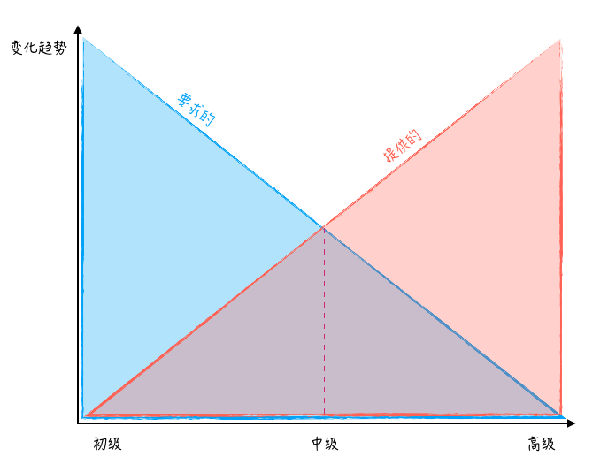

- 00 开篇词 程序行知：走在同样的路上，遇见自己的风景.md.html
- 01 初心：为什么成为一名程序员？.md.html
- 02 初惑：技术方向的选择.md.html
- 03 初程：带上一份技能地图.md.html
- 04 初感：别了校园，入了江湖.md.html
- 05 架构与实现：它们的连接与分界？.md.html
- 06 模式与框架：它们的关系与误区？.md.html
- 07 多维与视图：系统设计的思考维度与展现视图.md.html
- 08 代码与分类：工业级编程的代码分类与特征.md.html
- 09 粗放与精益：编程的两种思路与方式.md.html
- 10 炫技与克制：代码的两种味道与态度.md.html
- 11 三阶段进化：调试，编写与运行代码.md.html
- 12 Bug的空间属性：环境依赖与过敏反应.md.html
- 13 Bug的时间属性：周期特点与非规律性.md.html
- 14 Bug的反复出现：重蹈覆辙与吸取教训.md.html
- 15 根源：计划的愿景——仰望星空.md.html
- 16 方式：计划的方法——脚踏实地.md.html
- 17 检视：计划的可行——时间与承诺.md.html
- 18 评估：计划的收获——成本与收益.md.html
- 19 障碍：从计划到坚持，再到坚持不下去的时候.md.html
- 20 执行：从坚持到持续，再到形成自己的节奏.md.html
- 21 信息：过载与有效.md.html
- 22 领域：知识与体系.md.html
- 23 转化：能力与输出.md.html
- 24 并行：工作与学习.md.html
- 25 时间：塑造基石习惯（上）——感知与测量.md.html
- 26 时间：塑造基石习惯（下）——切割与构建.md.html
- 27 试试：一种“坏”习惯.md.html
- 28 提问：从技术到人生的习惯.md.html
- 29 偏好：个人习惯的局限与反思.md.html
- 30 写作：写字如编码.md.html
- 31 画图：一图胜千言.md.html
- 32 演讲：表达的技术.md.html
- 33 定义：阶梯与级别.md.html
- 34 晋升：评定与博弈.md.html
- 35 关系：学徒与导师.md.html
- 36 核心：安全与效率——工程技术的两个核心维度.md.html
- 37 过程：规模与协作——规模化的过程方法.md.html
- 38 思维：科学与系统——两类问题的两种思维解法.md.html
- 39 职业倦怠：如何面对？.md.html
- 40 局部最优：如何逃离？.md.html
- 41 沟通之痛：如何改变？.md.html
- 42 技术停滞：如何更新？.md.html
- 43 无法实现：困扰与反思.md.html
- 44 完成作品：理想与现实.md.html
- 45 代码评审：寄望与哀伤.md.html
- 46 人到中年：失业与恐惧.md.html
- 47 该不该去创业公司？.md.html
- 48 该不该接外包？.md.html
- 49 技术干货那么多，如何选？.md.html
- 50 技术分歧，如何决策？.md.html
- 51 技术债务，有意或无意的选择？.md.html
- 52 选择从众，还是唯一？.md.html
- 53 选择工作，还是生活？.md.html
- 54 侠客行：一技压身，天下行走.md.html
- 55 江湖路：刀剑相接，战场升级.md.html
- 56 御剑流：一击必杀，万剑归心.md.html
- 57 三维度：专业、展现与连接.md.html
- 58 三人行：前辈、平辈与后辈.md.html
- 59 三角色：程序员、技术主管与架构师.md.html
- 60 三视角：定位、自省与多维.md.html
- 61 工作之余，专业之外.md.html
- 62 跨越断层，突破边界.md.html
- 63 成长蓝图，进化跃迁.md.html
- 尾声 始于知，终于行.md.html
- 捐赠
56 御剑流：一击必杀，万剑归心
在前文《江湖路》中我找到的路是一条 “战场升级，技能升维” 之路，技能与战场的升维演化是一个相辅相成的过程。进入了升级后的战场，也需要升维后的技能模型，那我们该如何从旧有的技能模型进行升维演化呢？
我想还是用一些形象点的武功招式来类比说明。
拔刀斩
拔，提手旁，喻义需要亲自拔刀动手。
而拔刀术源自日本古武道，其核心思想便是一击必杀，利用瞬间高速的拔刀攻击对敌人造成出其不意的打击。其讲究的是快，也即速度和锋利度。
武士不断修行拔刀术，力求一击杀敌，而程序员学习和练习编程的过程也是类似的。最终，你的编程技能到达了一个什么样的程度，就是看它的锋利度，即面临一个个程序问题能否一刀见血，一击必杀。
刚入门的程序员上线发布碰到了一个问题，抓耳挠腮，冥思苦想，加班加点终不得解。于是跑来向你这个高级程序员请教，此时时钟指向了凌晨一点。你放下手中刚泡好正准备吃的方便面，一支燃烧着的半截烟头挂在你的指尖。你犹豫了一下：是猛抽两口还是灭掉烟头去处理这个紧急问题？
最终，你终究不舍地把半截烟头小心地放在方便面盒边沿，再用塑料的方便面叉把面盖和烟头一起固定住。然后，你挽起了袖子走到这个年轻程序员的电脑前，迅速扫了几眼报错的错误日志，再调出你心爱的 vi 编辑器，噼里啪啦地改动了几行代码，保存，关闭，再重新构建，发布。电脑黑底白字的界面不停地滚动着，你已站起身向散发着两种味道的方便面走去，并回头轻轻对年轻程序员说了声：可以了。
这就是你向年轻程序员展示你的拔刀术，问题一斩而绝。好吧，这是一种诡异的优雅，似乎任何问题对于电影里的程序员而言，在电脑前噼里啪啦敲上几行代码都能解决。但现实中大部分时候都比看上去要更困难一些，真实世界的拔刀术和动漫《浪客剑心》里剑心的 “天翔龙闪” 相比，终归显得笨拙了许多。
而拔刀术正是我们第一阶段的技能模型，在我们追求 “天翔龙闪” 的境界时，看上去并不遥远，但越走到后面，却越来越慢了，似乎永远也到不了，这就是已经进入了第一阶技能的瓶颈区间了。
在瓶颈区中，进境缓慢近乎停滞，就可以尝试下技能升维 —— 从 “拔刀” 到 “御剑” —— 看能否在新的战场找到突破点。
御剑术
御，双人旁，喻义贴身教授与把控。
御剑术，这个招数的类比来自好多年前（我那会还读初中吧）玩过的一个电脑游戏——《仙剑奇侠传》，我记得这也是游戏里主角在第二阶段学会的技能。如果过去面临问题你需要拔刀解决，那这里的 “刀” 就是你的知识、技能和经验。那御剑术里的 “剑” 又是什么？
记得以前读过一篇关于高级程序员的文章，其中提出了一个组合三角的观点，先看下面这张图：

程序员成长阶段要求的帮助和提供的指导变化趋势示意图
图中蓝色三角区域表明，随着你从入门初级成长到高级程序员的过程中，需要得到的帮助和指导越来越少；而红色三角区域表明，你能提供的帮助和指导应该越来越多。所在，在前面那个想象的 “泡面拔刀” 的场景中，作为高级程序员的你，更理想的做法应该是去指导年轻程序员如何解决问题的思路，而不是自己拔刀，唰唰两下搞定。
对，很多高级程序员都会以 “等把他教会，我自己早都搞定了” 为由，忍不住自己拔刀。理解、掌握并应用好一种知识和技巧是你的 “拔刀术”，但分享传递并教授指导这种知识和技巧才是 “御剑术”，而 “剑” 就是你面前更年轻、更初级的程序员。
曾经多少次面对年轻初级程序员交付的结果，我都有一种懊恼的心情，怀疑当初是不是该自己拔刀？那时就突然理解了驾校老司机为何总是满腔怒火地吼着：“让你松点离合，只松一点儿就好…”，而当初的我刚学开车时，一开始不是松少了，就是熄火了。
从 “拔刀术” 到 “御剑术”，其技能模型的招式和对象变化了，但本质框架却是类同的，这里的关键点是：如何剥离自我，通过他人来完成设计和实现，并达成解决问题的目标。
万剑诀
诀，言字旁，喻义以言引导，影响多于控制。
所有的程序员都是从修行 “拔刀术” 开始，但只有极少数人最终走到了剑心 “天翔龙闪” 的境界，所有未能突破的我们都进入了瓶颈停滞区。我们不断学习和练习，终于练到拔刀由心，收发自如，终成习惯，但要将这个技能升维，跨越战场，却正是需要打破这个习惯。
其中，从 “拔刀术” 到 “御剑术” 是习惯的打破；从 “御剑术” 到 “万剑诀” 则是量级的变化。因而，“御剑术” 是修行 “万剑诀” 的必经之路。嗯，游戏里也是这么设定的。
“万剑诀” 正如其名，御万剑而破敌。回到现实中，这是一项高杠杆率的技能。而高杠杆率的活动包括：
- 一个人可以同时影响很多人。
- 一个人可以对别人产生长远的影响。
- 一个人所提供的知识和技能，会对一群人的工作造成影响。
这就是 “万剑诀” 的核心要诀。应用到程序员修行之路上：如果走上同时影响多人的路线，这就是一条团队管理和领导者之路；如果走上影响长远的路线，你可能乐于分享、传授，这可能是一条布道师的路线；如果你通过提供知识和技能来影响其他一群人的工作，那么这可能是一条架构师的路线。
“万剑诀” 和 “御剑术” 的共通之处在于都以人为剑，观察、揣摩每把剑的特性，先养剑再御剑最后以诀引之。若 “拔刀术” 是自己实现的能力，那 “御剑术” 和 “万剑诀” 都是借助他人使之实现的自信和能力，只是后者相比而言规模更大，杠杆率更高。“万剑诀” 的重心在追求问题解决的覆盖面，而面临每个具体问题时就需要依赖每把剑的锋利度了。
另外，“御”之一字更着重了一层控制的含义，而 “诀” 之一字在于影响多于操控，这里面的关键点就是：剑本身的成熟度。不够成熟的剑只能 “御” 之，足够成熟的剑方能 “诀” 之。
走上 “万剑诀” 之路后，还能再领悟 “天翔龙闪” 的奥义么？也许这是时代演进让我们不得不做出的选择，今天的程序江湖掌握了 “天翔龙闪” 奥义的 “神” 级程序员已经越来越成为一个传说，数十年前，那个英雄辈出的年代已不复再现。
拔刀术，是亲自动手斩杀问题，难处在于维度单一，后期进境陷入瓶颈停滞；御剑术，是指导他人解决问题，难处在于打破习惯，剥离自我；万剑诀，是借助他人使之实现，难处在于剑的养成。
它们的共通之处，都是基于长期的编程和工程训练，建立的系统化思维能力，创造模型来解决问题，而变化在于模型的适用对象不同，导致需要不停地调试合适的 “模型参数” 来适配问题，并且不论是技术框架还是人的 “模型参数” 都是在变化之中的。
最后，在你的技术升维演进转型路线上，你对这类变化的感受和认知是怎样的？欢迎留言分享。
© 2019 - 2023 Liangliang Lee. Powered by gin and hexo-theme-book.